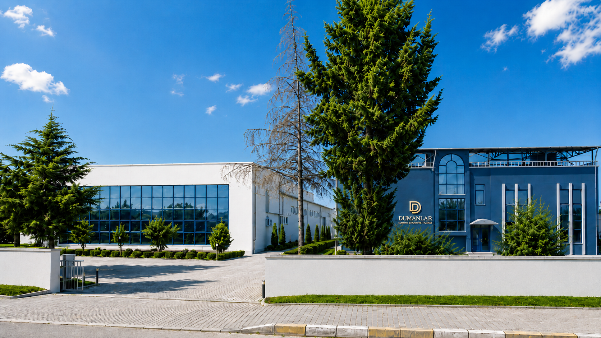
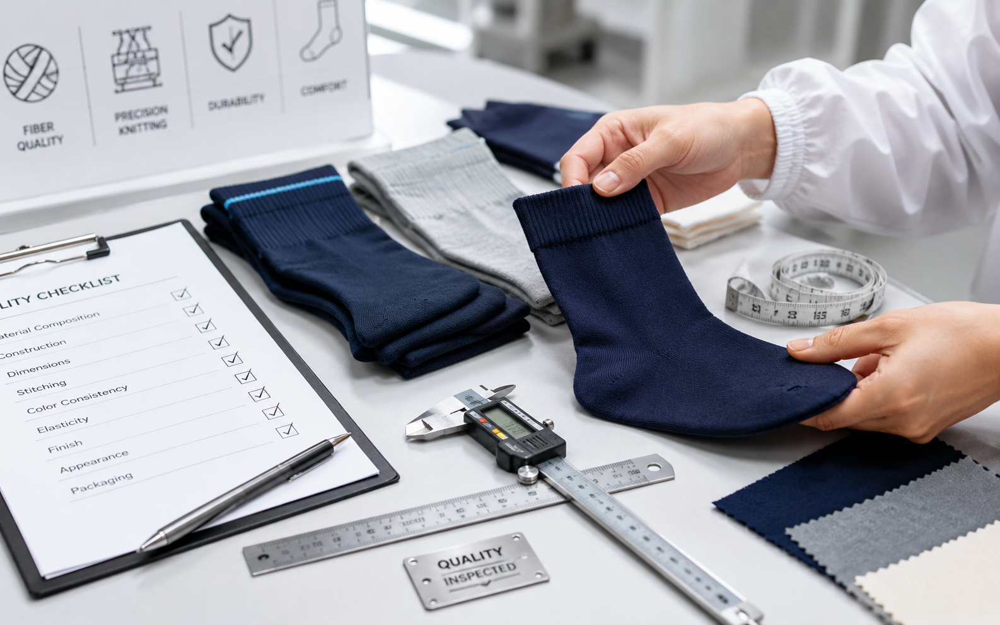

Kurumsal
1975’ten Bugüne Çorap ve Tekstil Üretiminde Güvenilir Güç
DUMANLAR A.Ş.; BİTKE, MOFİY ve BAFİY markalarıyla üretim tecrübesini modern tesis, güçlü makine parkı ve kalite odaklı hizmet anlayışıyla birleştirir.
1975’ten Bugüne
5.130 m² Üretim Alanı
450.000 Çift/Ay
BİTKE • MOFİY • BAFİY

Hakkımızda
Birkaç mekanik makineden güçlü üretim altyapısına
DUMANLAR A.Ş., 1975 yılında çorap, çamaşır ve tekstil ürünleri satışı amacıyla ticaret hayatına başlamıştır. 1986 yılında imalat alanına adım atan firmamız; BİTKE, MOFİY ve BAFİY markalarıyla üretimini iç ve dış pazarlara sunmaya başlamıştır.
Birkaç mekanik makineyle başlayan çorap üretim yolculuğumuz, bugün modern üretim altyapısı ve güçlü makine parkı ile Türkiye’nin sayılı üretici firmalarından biri olma noktasına ulaşmıştır.
Güçlü sermaye yapısı, başarılı yönetim anlayışı, gelişen teknolojiye uyum ve değişen tüketici ihtiyaçlarını yakından takip etme yaklaşımıyla istikrarlı şekilde büyümeye devam etmekteyiz.
Kalite her şeyden önce gelir
Tarihçe
Geçmişten gelen tecrübe, bugünün üretim gücü
Yıllardır dış pazarlarda güvenilir bir üretici olarak görülen DUMANLAR A.Ş.; bugün kendi markalarıyla da sektörde güçlü bir konum elde etmenin haklı gururunu yaşamaktadır.
Ticaret Hayatına Başlangıç
Çorap, çamaşır ve tekstil ürünleri satışıyla sektördeki ilk adımlar atıldı.
İmalat Başlangıcı
Üretim hayatına geçilerek kendi markalarını oluşturma süreci başladı.
Geniş Makine Parkı
Modern üretim altyapısıyla çorap ve tekstil ürünlerinde güçlü kapasiteye ulaşıldı.
Sürdürülebilir Büyüme
Kalite, teknoloji ve müşteri memnuniyeti odaklı üretim anlayışıyla büyüme sürüyor.
Üretim Gücü
Çorap ÜretimiErkek, kadın, çocuk, spor ve özel ürün grupları.
Tekstil ÜrünleriÇamaşır ve tamamlayıcı tekstil ürünlerinde üretim.
Özel MarkaEtiket, ambalaj ve ürün detaylarında markaya özel planlama.
Numune SüreciÜretim öncesi model, renk, beden ve hammadde netleştirme.
Kalite KontrolSiparişten teslimata kadar kontrollü kalite yaklaşımı.
Toptan Üretimİç ve dış pazar ihtiyaçlarına uygun ölçekli üretim.
Modern tesislerde planlı ve kontrollü üretim
BİTKE ÇORAP, 5.130 metrekare kapalı alanda üretim faaliyetlerini sürdürmektedir. Aylık yaklaşık 450.000 çift çorap ve 100.000 adet tekstil ürünü üretim kapasitesiyle geniş bir üretim altyapısına sahiptir.
Yeniliğe açık, geleceği öngörebilen ve sektördeki değişimlere hızlı uyum sağlayabilen kadromuzla; markalarımıza, iş ortaklarımıza ve müşterilerimize güvenilir üretim çözümleri sunmaktayız.


Üretim Yaklaşımı
Sipariş anından teslimata kadar takip
Modern tesislerimizde ürettiğimiz ürünlerde toplam kalite anlayışını benimseriz. Sipariş anından teslimata kadar tüm üretim sürecinin takipçisi olur; ürün grubu, hammadde, model, renk, beden, etiket ve ambalaj detaylarını müşteri beklentilerine göre planlarız.
DUMANLAR A.Ş.; BİTKE, MOFİY ve BAFİY markalarıyla, hem kendi markalı ürünlerinde hem de iş ortaklarına sunduğu üretim çözümlerinde kaliteyi, güveni ve sürdürülebilirliği esas alarak yoluna devam etmektedir.
NumunePlanlamaKalite KontrolTeslimat
Süreç Yönetimi
Üretimden teslimata kontrollü akış
Her sipariş; talep analizi, numune hazırlığı, üretim planlama, kalite kontrol ve sevkiyat adımlarıyla kontrollü biçimde ilerletilir.
Talep Analizi
Ürün grubu, adet, model, hammadde ve teslimat beklentisi netleştirilir.
Numune Hazırlığı
Renk, beden, desen, etiket ve ambalaj detayları üretim öncesi planlanır.
Üretim Planlama
Makine parkı, kapasite ve zaman yönetimi siparişe göre organize edilir.
Kalite Kontrol
Ürünler üretim süreci boyunca ve teslimat öncesinde kontrol edilir.
Paketleme & Sevkiyat
Ürünler satış kanalına uygun şekilde paketlenerek teslimata hazırlanır.
Misyon, Vizyon ve Değerler
Kalite, güven ve sürekli gelişim odağı
Üretim anlayışımızı müşteri memnuniyeti, sürdürülebilir kalite ve uzun vadeli iş birliği üzerine kuruyoruz.
Misyonumuz
Kaliteli hammadde, güçlü üretim altyapısı ve müşteri odaklı hizmet anlayışıyla çorap, çamaşır ve tekstil ürünleri üretmek; iç ve dış pazarda güvenilir, sürdürülebilir ve rekabetçi çözümler sunmaktır.
Vizyonumuz
Çorap ve tekstil sektöründe kalite, güven ve yenilikçilik ilkeleriyle büyüyen; kendi markalarıyla ulusal ve uluslararası pazarda bilinirliğini artıran, güçlü ve saygın bir üretici firma olmaktır.
Değerlerimiz
Kalite, güven, müşteri memnuniyeti, sürekli gelişim ve sürdürülebilir üretim; DUMANLAR A.Ş.’nin tüm üretim yaklaşımının temelini oluşturur.

Kalite Politikası
Hammadde SeçimiÜrün grubuna uygun malzeme ve iplik planlaması.
Üretim TakibiSiparişin üretim boyunca düzenli takip edilmesi.
Kalite KontrolÜrün ölçü, görünüm ve kullanım beklentilerine uygunluk.
Teslimat SüreciPaketleme ve sevkiyat öncesi son kontrol yaklaşımı.
Kalite yalnızca sonuç değil, üretimin tamamıdır
BİTKE ÇORAP, tekstil sektöründe her geçen gün daha ileriye gitme hedefiyle üretim faaliyetlerini sürdürmektedir. Uluslararası pazarda ve iç piyasada yüksek kaliteli hammadde kullanımı, müşteri memnuniyeti ve sürdürülebilir kalite anlayışı firmamızın temel öncelikleri arasında yer almaktadır.
“Kalite her şeyden önce gelir” ilkesiyle hareket eden DUMANLAR A.Ş., üretimin her aşamasında kalite standartlarını benimser.
Kalite Her Şeyden Önce Gelir
Markalarımız
BİTKE, MOFİY ve BAFİY ile güçlü marka yapısı
Kendi markalarımızla çorap, çamaşır ve tekstil ürünlerinde kalite odaklı üretimi iç ve dış pazarlara sunuyoruz.
Çorap ve tekstil ürünlerinde kalite, üretim tecrübesi ve müşteri memnuniyeti odağıyla konumlanan ana marka yapısı.
Modern ürün grupları, geniş satış kanalları ve değişen tüketici beklentilerine uyum sağlayan marka yaklaşımı.
Tekstil ürünlerinde marka çeşitliliğini ve üretim kabiliyetini güçlendiren tamamlayıcı marka değeri.
İş Birliği
Markanız için güvenilir üretim partneri arıyorsanız, doğru yerdesiniz.
Toptan üretim, özel marka, etiket, ambalaj ve sevkiyat süreçleri için DUMANLAR A.Ş. ile iletişime geçebilirsiniz.